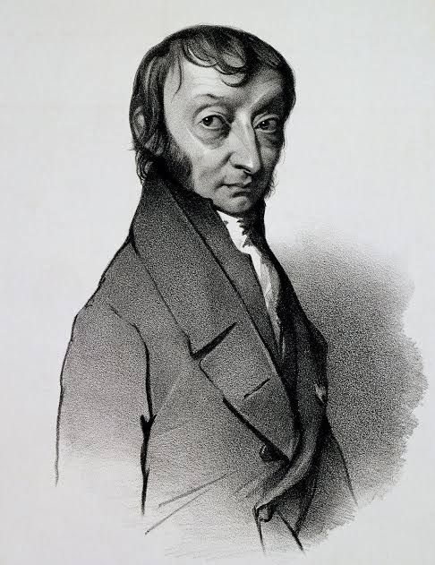
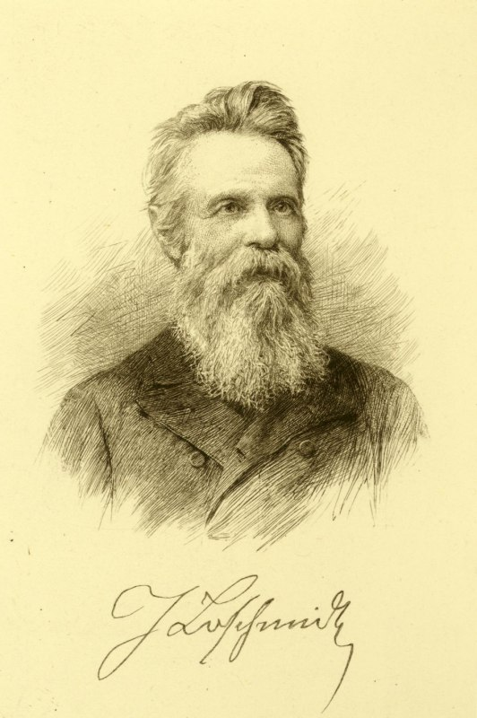
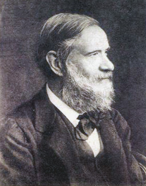
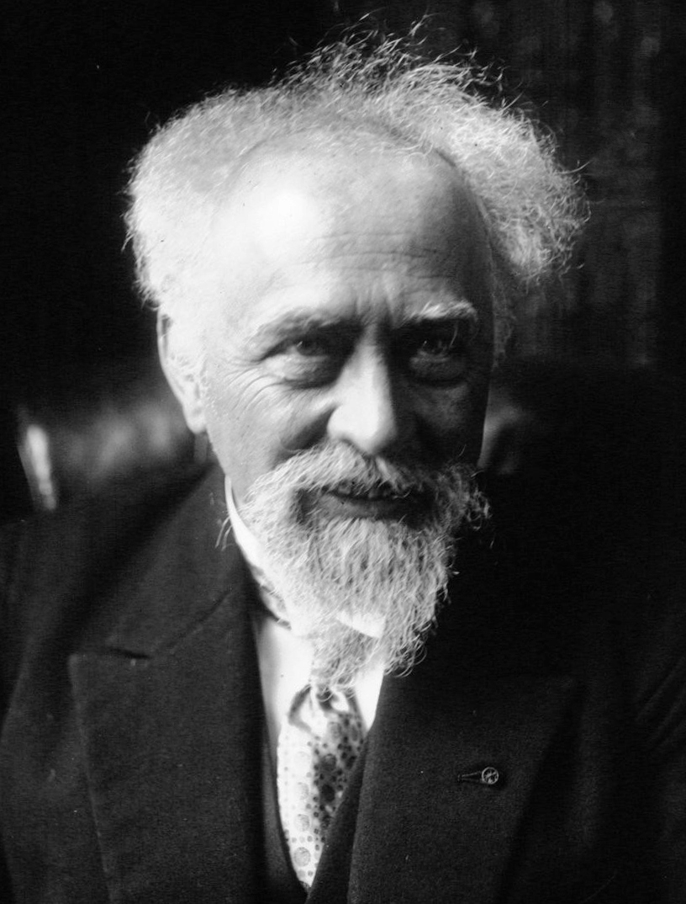
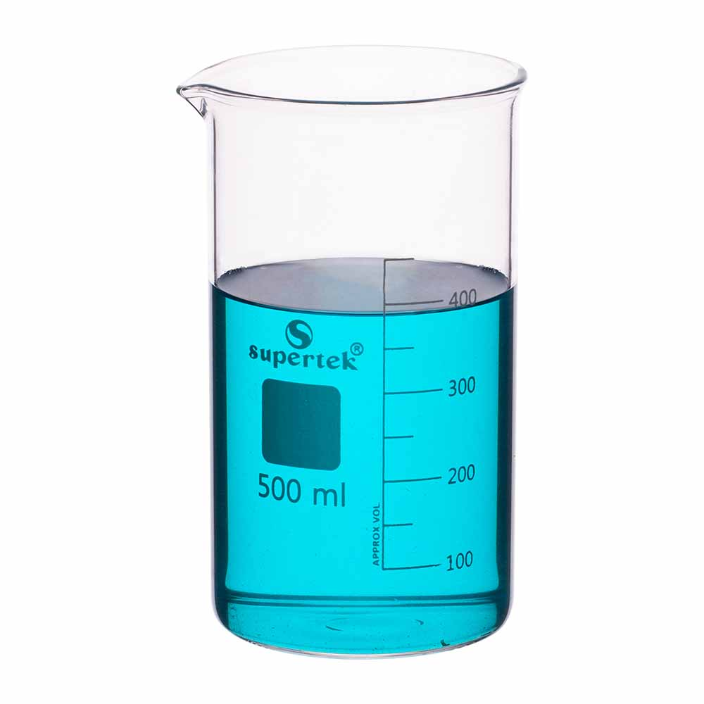
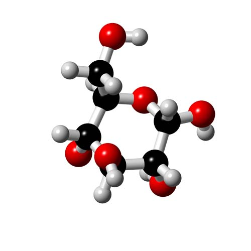
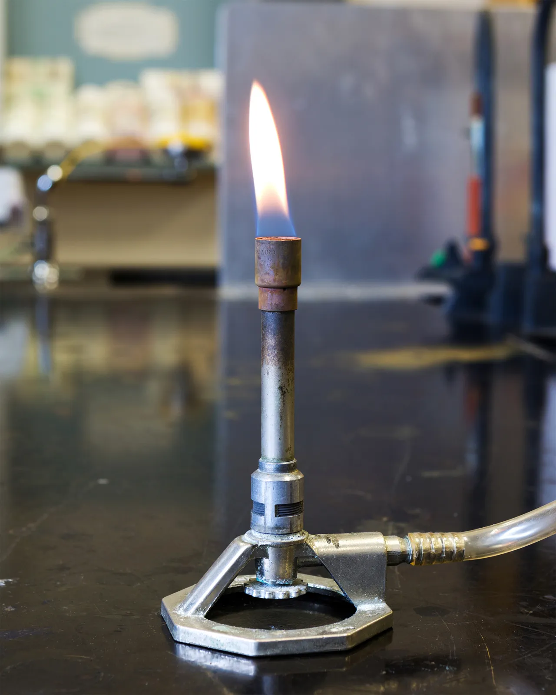

A Super Super
Awesome Website
Avogadro's Number = 1 mol ≈ 6.022 × 10²³
≈
602,214,141,070,409,084,099,072

Amadeo Avogadro hypothesized in the year 1811 that the volume of a gas (at a given pressure and temperature) is proportional to the number of atoms or molecules.

Advances in gas laws and kinetic theory by Josef Loschmidt in 1865 led a numerical estimate of the number of particles per cubic centimeter of gas at standard temperature and pressure, now called the Loschmidt constant.

The concept of a mole wasn't solidified until 1860 at the Karlsruhe Congress, where Stanislao Cannizzaro presented a method for determining atomic weights, which was based on Avogadro's hypothesis.

In the early 1900s, Jean Perrin provided the first acceptable value through Brownian motion experiments, and named the constant after Avogadro.

The mole is a fundamental concept in chemistry because it serves as a bridge between the molecular world and the macroscopic world, allowing scientists to determine the number of particles in a substance by weighing it.

Avogadro's number serves as a conversion factor relating the number of particles to the amount of substance in moles, enabling chemists to calculate the number of atoms, ions, or molecules in a sample.

This is crucial for balancing chemical equations. If you know the mass of the substance, you can find the particle count by dividing the mass by the molar mass (the amount of grams per one mole of the particles) and multiplying by Avogadro's number.